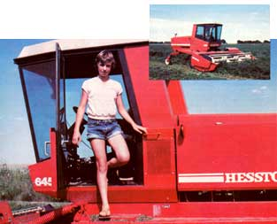

More Than Just A Summer Job
A 12-year-old farm girl agreed to drive a giant hay cutter, and found she had tackled ...
by Angela Oaks
May/June 1983
MOTHER feels strongly that youths can be creative "doers" working toward more ecological and self-reliant lifestyles ... whether their tasks be raising chickens on a farm or maintaining rooftop container gardens in the city. To support the endeavors of our often overlooked "underage" citizens, we're glad to publish well-written articles from younger children and teenagers concerning projects they've undertaken. However, we recommend that all young authors query (that is, send us a letter telling about the story you'd like to do) before writing a full article. Address inquiries to Mother's Children, THE Mother Earth News(restricted), 105 Stoney Mountain Road, Hendersonville, North Carolina 28791.
I live on a 1,372-acre ranch in southeastern Wyoming. Most of my family's income is from cattle. And, since we raise all the feed for our animals on 350 irrigated acres, we do a lot of farming.
One day, at the beginning of last summer, my dad came in from the fields and told us, "The hired man just quit for a job in town." That meant Dad was left with the whole workload of the farm.
So that night he asked me if I'd like to learn how to run the swather, the machine that mows hay or grains into windrows. At first, I thought he was joking! The swather is a huge and expensive piece of machinery! Of course, I was already used to doing farm chores ... sometimes I even drove the pickup to help out. But I found the thought of operating that large machine to be almost mind boggling. After a lot of thinking, though, I decided to try it. I wanted to prove to myself that I could drive the giant hay cutter.
The next morning, Dad and I crawled into the swather's cab. The machine looked like a huge, placid mechanical insect before we got in, but it soon became a moving monster that could devour hay and anything else-like snakes and birds and bunnies-in its path! I vowed right then and there that none of those creatures would die when I was in control of the swather.
Dad gave me step-by-step instructions, explaining why things worked, as well as how. Then after a few times around the hayfield, he left to do other farm work, and there I was ... soloing. The monstrous hay gobbler was now in my power. I sat there with a soaring spirit and knocking knees, feeling both free and independent and suddenly aware of the big responsibility I'd accepted.
My first hours on the swather went by as slowly as molasses dripping through a sieve. I thought the machine's noise and vibration would make my ears shake right off my head. And I was holding the controls so tightly that my knuckles turned white.
With my left hand on the steering wheel and my right hand on the variable speed lever, I cut row after row of standing alfalfa. But I slowed down, or even stopped briefly, whenever I saw the machine's grinding teeth come near baby pheasants, bunnies, or other animals. And I looked back occasionally to get a glimpse of the neat rows of cut hay the swather let fall beneath me. After a while, I began to imagine that I could feel the swather cutting the green alfalfa, passing it through its mechanical parts, and depositing sweet-smelling hay behind.
By midafternoon the temperature soared into the high 90's, and I was grateful that the machine's cab had an air conditioner. At least I was glad ... until an angry skunk sprayed the smother, and that air conditioner sucked the acrid perfume right into the cab with me! With tears in my eyes, I glanced toward the uncut alfalfa to watch my unfriendly animal friend waddle back into the foliage as if it were saying, "See you next round, too!" (Fortunately, we didn't come across each other again. I certainly didn't want to meet up with the skunk ... but I couldn't help feeling that the swather spent the rest of the day looking for revenge!)
As the days went by and I spent more and more hours cutting, I grew less afraid and more confident. I came to look forward to each outing with my new partner, the swather. Together we could mow ANYTHING! I decided we could even do custom work ... being hired out together to cut fields for other farmers. (That dream didn't materialize last summer, but perhaps it will this year.)
After the first hay mowing was finished, my Uncle Jack came over to help us with the oat harvest. Dad needed to have that grass chopped while it was green and then packed into a pit for winter calf feed. I had to give up my swimming lessons to run the swather during oat cutting, but I didn't mind ... because participating in the five busy days of dawn-to-dusk harvesting was thrilling.
First, I'd mow the oats into windrows. Then Uncle Jack would follow on a tractor that pulled a chopper and a hay wagon. The chopper cut the grass into little pieces and then blew them into the wagon. When the bed was full, Uncle Jack would dump the oats into a truck that Joe (a friend Dad had hired for the week) drove. Joe would haul the chopped grass from the field to the pit ... a long, deep hole near the feedlots. There, Jeff, a neighbor, would tamp it tightly down with a machine called the packer.
Oat harvesting usually required a four-man crew . . . but last summer our team consisted of three men and one 12-year-old girl! I got teased a bit about wearing thongs to the field, but the men really treated me with the same respect they would have given another adult. Perhaps that was because I knew I could drive that great machine well, so I had a lot of respect for myself.
Although I've lived on a farm all of my life, I saw things from another slant driving the swather. ("Naturally," my younger brother Rob kidded me, "you're four feet off the ground!") I realized that we, the harvest crew, were running thousands and thousands of dollars' worth of equipment, manufactured in the eastern part of the United States, up and down fields in Wyoming! And we were doing all this to cut the feed that our calves would eat next winter. Then, when the animals reached slaughtering weight, they'd be killed, processed, and shipped ... to wind up in some large city as hamburger or steak! I was actually a part of our nation's vast food/economic system.
The connection between my job and our farm's wild animals showed me that I was part of a large environmental system as well. The fourlegged creatures, fowl, and insects that inhabited the fields all had to leave as the grasses were cut. Often, western gulls (they resemble the coastal sea gulls) would circle the swather, soaring beautifully around me. They'd then dive to the ground-almost crashing-and rise up just in time to save themselves and carry off a juicy bug.
I learned a lot of practical lessons while driving the swather, too. Many times, when I was faced with a new situation, I'd ask Mom or Dad what to do. They'd always answer, "Use your head. What do you think you should do?" I'd then have to arrive at my own decision and live with it. I made some mistakes, too. For example, once the swather was running low on gas and I decided to turn it off and walk a mile back to our house for more fuel. When I got home and told Mom about it, she explained that the one-eighth of a tank that was left was really quite sufficient to work with ... since the swather had a 30-gallon fuel capacity! So I walked the mile back to the machine and finished mowing that field of hay.
And occasionally I'd make a real blunder. Once, after a rain storm, I sank the swather in two feet of mud! We had to get a four-wheel-drive tractor to pull it out. Usually, though, I felt confident that I was doing the job right.
Then again, sometimes the swather would attempt to devour more alfalfa than it could chew, and it would get plugged up. I'd have to shut down the machine and pull massive amounts of mown hay-a handful at a time-out of its teeth. That job was really a pain ... in more ways than one, because once I stepped on the swather's front crossbar and fell into the teeth, bruising my calf and hand badly. I swallowed back tears, cleaned out the machine's head, climbed back into the cab, and continued mowing.
Aside from teaching me a lot, my summer job helped improve my family's financial situation. Dad paid me $5.00 an hour, the appropriate rate for hired farm help in our area. But instead of having that money go out to a hired hand, it stayed at home ... with me. Now, I can use it to buy my school clothes and supplies, and save for my future, too. And because I'm under 19 years of age, I'm eligible to earn 3,300 tax-free dollars each year.
By working on weekends-and missing a couple of days of school-I was even able to do the third and final hay cutting for the year. Once I reached the end of that last field of alfalfa, I "shut 'er down" with a bit of reluctance ... because I knew I wouldn't be driving the swather until the next summer, when the fragrant purple alfalfa flowers come into bloom and the series of hay and oat harvests begins again. As I walked away, I turned to say, "Thanks" to that huge, and now silent, giant ... a friend that taught me a lot about myself.
 When the hired man up and quit, Angela got the chance to drive her father's swather... a huge mower that normally handled only by adult farmhands! And tackling that ""man's job"" taught her a good deal about farming, wildlife, independence... and herself. |
 |
|